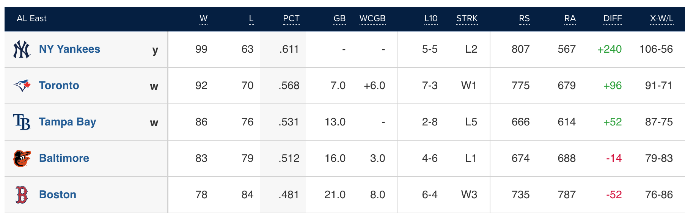

Pythagorean expectation is a formula that originated with Bill James in the early 1980s. The formula attempted to estimated the number of games a baseball team should have won in based on the number of runs scored and allowed. The basic formula is: \[\text{Win Percentage} = \frac{\text{Runs Scored}^2}{\text{Runs Scored}^2 + \text{Runs Allowed}^2} \] The Pythagorean winning percentage is often compared with a team’s actual winning percentage in baseball to identify teams that are underperforming or overperforming and whether or not a team’s performance is sustainable over the course of the season. The Pythagorean winning percentage has become popular enough that a team’s expected recording according to this formula is displayed on standings on MLB.com under the X-W/L column. .
When considering the AL East in 2022, the Yankees record is worse than what was expected based on their run differential, while the Orioles had a better record than expected. In addition to determining if a team is under or overperforming in a season, the Pythagorean record can also help inform a team how good that may actually be when attempting to make decisions during free agency in the next season.
Bill James initially proposed an exponent of 2 in this formula. There have been a number of studies looking at the exponent with a goal of finding a better fit. In baseball, the most accurate exponent has been found to be 1.83 and is used most often.1 One simple way to derive this exponent is using a transformed version of the Pythagorean formula and using linear regression. This is a simplified approach to it, but even the results of linear regression produces exponent values that are close to the ideal values found for each sport.
The formula for Pythagorean win percentage, with an unknown exponent can be written as: \[\text{Win Percentage} = \frac{W}{W + L} = \frac{\text{R}^x}{\text{R}^x + \text{RA}^x} \] where \(R\) is the runs scored by a team and \(RA\) is the runs allowed by a team.
Using algebra, the formula can be rearranged as shown below where \(x\) can be the parameter of a linear regression model.
\[WR^x + WRA^x = WR^x + LR^x\] \[WRA^x = LR^x\]
\[\frac{W}{L} = \frac{R^x}{RA^x}\] \[ log(\frac{W}{L}) = x*log(\frac{R}{RA})\] With this formula, we can solve for \(x\) using simple linear regression where \(log(\frac{W}{L})\) is the response variable and \(log(\frac{R}{RA})\) is the explanatory variable.
The value of this exponent varies across different sports and the remainder of this post shows how to get the exponent for MLB, NHL, NFL, and NBA using code in R. A discussion about what the different values of the exponent mean won’t be covered here, but a brief, but thorough explanation about the exponent in the formula is given on this Wikipedia page in the theoretical explanation section.
Since the Pythagorean winning percentage is used most commonly in baseball, I wanted to look at baseball first. As previously mentioned, the ideal exponent has been found to be 1.83, so I will compare the result I get from here to that exponent.
The data to calculate the exponent comes from the Lahman package, which contains baseball statistics all the way from 1871 through the present. Since some statistics were recorded early on, any year after 1900 was used. The run differential and winning percentage was calculated for each team every season. Linear regression was then used to calculate what the value of the exponent would be. Note that from this formula, there is no intercept in the model, which is why -1 is included in the call to the lm function.
The resulting value given is 1.854, which is close to the ideal value of 1.83 and can be derived simply using only linear regression.
library(tidyverse)
library(Lahman)
mlb <- Teams %>%
filter(yearID > 1900) %>%
select(teamID, yearID, lgID, G, W, L, R, RA) %>%
mutate(RD = R - RA,
Wpct = W / (W + L))
mlb_pyt <- mlb %>%
mutate(log_w_ratio = log(W/L),
log_r_ratio = log(R / RA))
pyt_fit <- lm(log_w_ratio ~ -1 + log_r_ratio, data = mlb_pyt)
round(coef(pyt_fit), digits = 3)## log_r_ratio
## 1.854library(nhlapi)
nhl <- nhl_standings(seasons = 1990:2022)
nhl_data <- nhl$teamRecords %>%
bind_rows() %>%
mutate(point_diff = goalsScored - goalsAgainst,
Win_pct = leagueRecord.wins/leagueRecord.losses,
log_win_ratio = log(leagueRecord.wins/leagueRecord.losses),
log_point_ratio = log(goalsScored/goalsAgainst))
pyt_fit_nhl <- lm(log_win_ratio ~ -1 + log_point_ratio, data = nhl_data)
coef(pyt_fit_nhl)## log_point_ratio
## 2.352015library(espnscrapeR)
library(purrr)
season <- espnscrapeR::get_nfl_standings(season = 2002)
nfl_data <- map_df(2002:2021, get_nfl_standings)
nfl_pyt <- nfl_data %>%
mutate(log_w_ratio = log1p(wins) - log1p(as.numeric(losses)),
log_point_ratio = log(pts_for/pts_against))
head(nfl_data)## # A tibble: 6 × 28
## conf season team_id team_lo…¹ team_…² team_…³ team_…⁴ team_…⁵ pts_d…⁶ g_beh…⁷
## <chr> <int> <chr> <chr> <chr> <chr> <chr> <chr> <chr> <chr>
## 1 AFC 2002 10 Tennessee Titans TEN Tennes… https:… 43 0
## 2 AFC 2002 13 Oakland Raiders OAK Oaklan… <NA> 146 0
## 3 AFC 2002 23 Pittsbur… Steele… PIT Pittsb… https:… 45 0.5
## 4 AFC 2002 11 Indianap… Colts IND Indian… https:… 36 1
## 5 AFC 2002 20 New York Jets NYJ New Yo… https:… 23 2
## 6 AFC 2002 5 Cleveland Browns CLE Clevel… https:… 24 2
## # … with 18 more variables: losses <chr>, seed <int>, pts_against <dbl>,
## # pts_for <dbl>, streak <dbl>, ties <dbl>, win_pct <dbl>, wins <dbl>,
## # div_ties <dbl>, record <chr>, home_wins <dbl>, home_losses <dbl>,
## # away_wins <dbl>, away_losses <dbl>, conf_wins <dbl>, conf_losses <dbl>,
## # div_wins <dbl>, div_losses <dbl>, and abbreviated variable names
## # ¹team_location, ²team_name, ³team_abb, ⁴team_full, ⁵team_logo, ⁶pts_diff,
## # ⁷g_behindpyt_fit_nfl <- lm(log_w_ratio ~ -1 + log_point_ratio, data = nfl_pyt)
coef(pyt_fit_nfl)## log_point_ratio
## 2.396146library(hoopR)
nba_data <- map_df(1994:2021, espn_nba_standings)
nba_data <- nba_data %>%
mutate(wins = as.numeric(wins),
losses = as.numeric(losses),
avgpointsfor = as.numeric(avgpointsfor),
avgpointsagainst = as.numeric(avgpointsagainst),
games = wins + losses,
points_for = games*avgpointsfor,
points_against = games*avgpointsagainst,
point_diff = points_for - points_against,
log_w_ratio = log(wins/losses),
log_point_ratio = log(points_for/points_against))
pyt_fit_nba <- lm(log_w_ratio ~ -1 + log_point_ratio, data = nba_data)
coef(pyt_fit_nba)## log_point_ratio
## 14.08544library(knitr)
exponents <- data.frame(League = c("MLB", "NHL", "NFL", "NBA"),
Exponent = round(c(coef(pyt_fit), coef(pyt_fit_nhl),
coef(pyt_fit_nfl),
coef(pyt_fit_nba)), digits = 3))
kable(exponents)| League | Exponent |
|---|---|
| MLB | 1.854 |
| NHL | 2.352 |
| NFL | 2.396 |
| NBA | 14.085 |
Baseball Reference uses an exponent of 1.83 in their calculation of Pythagorean winning percentage.↩︎